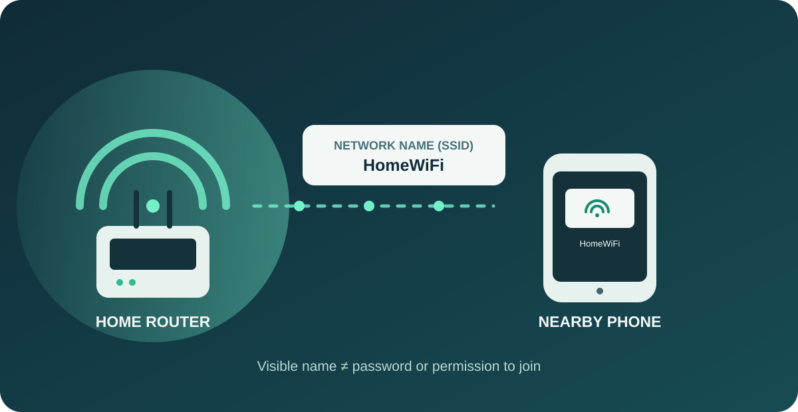
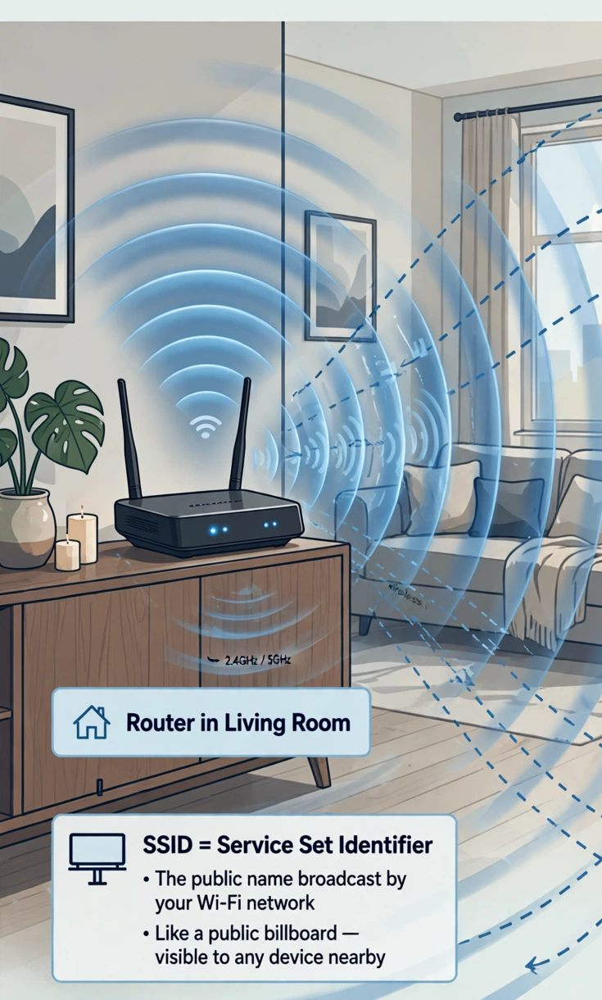
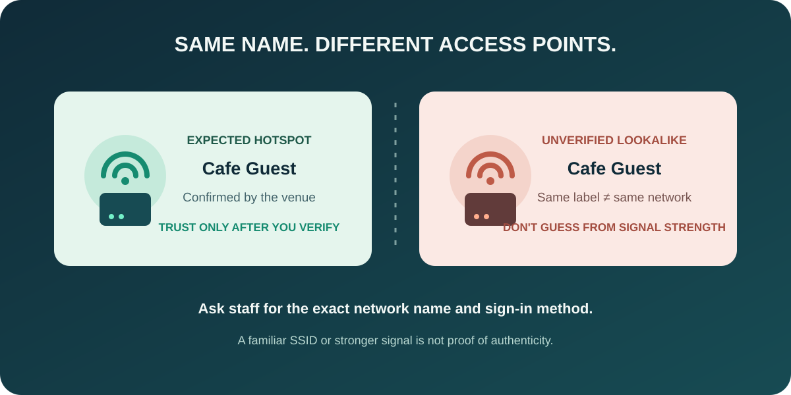
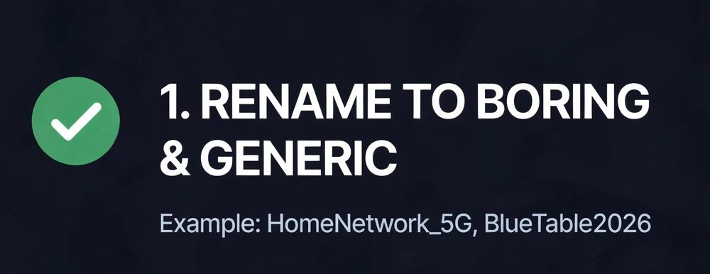

Your Wi-Fi name is public. Is it your address?
Your network name might feel like a harmless label. But if it includes your name, apartment number, building, or internet provider, it can tell a stranger more than you intended.
The good news: your Wi-Fi name is not your password, and seeing it does not automatically give anyone your address or access to your network. The useful question is what a name can reveal when combined with other information.
What is an SSID?
The SSID (Service Set Identifier) is the name devices use to identify a Wi-Fi network. Nearby devices can usually see it in their network lists. It is advertising a network's presence, not granting permission to join.


From the supplied storyboard. The drawing is illustrative, not to scale: Wi-Fi range depends on the router, obstructions, antennas, and surroundings.
Radio range is not a fixed 100 metres: walls, equipment, antennas, and the surroundings all matter. A signal can reach beyond the home, so it is sensible to treat the name as information other people may observe.
When a network name can give away clues
Names such as Amit_Flat302 or SharmaVilla_Bangalore expose personal
details directly. A generic name does not reveal those details, although it
does not make the network unobservable.
There is also a difference between a name and a mapped location. Projects such as WiGLE collect community-submitted wireless observations, which can include network identifiers and GPS coordinates. A distinctive SSID may help someone connect a network listing to a person or place, but a name alone is not a guaranteed pin on a home. WiGLE describes its map locations as estimates derived from submitted observations; coverage and accuracy vary.
So: don't put identifying details in your SSID, but don't mistake renaming it for a complete privacy shield.
Could someone copy the name and trick my phone?
An evil twin is a rogue access point set up to imitate a legitimate one, often a public hotspot. The attacker hopes people will choose the lookalike. CISA describes this attack and recommends confirming a public hotspot's name and password with its operator.

Concept art from the supplied storyboard, not a real network scan. A lookalike SSID alone does not bypass WPA security or make a device auto-join; verify a public hotspot with its operator.
A matching network name does not, by itself, force your device to connect, bypass a secured network's password, or let someone read every message or steal an OTP. Devices and network security settings matter. Still, don't trust a familiar name or a stronger signal as proof that a hotspot is genuine. When in doubt, use mobile data or ask the venue for the correct network.
A practical home Wi-Fi checkup

A cropped recommendation from the supplied storyboard.
- Choose a neutral network name. Skip names, apartment numbers, street addresses, phone numbers, and other identifying details. Changing the name is a privacy improvement, not a replacement for security.
- Use modern Wi-Fi protection. Choose WPA3-Personal if your router and devices support it; otherwise use WPA2 with AES. Set a long, unique Wi-Fi passphrase. CISA identifies WPA3 as the strongest of these options.
- Secure the router itself. Change its administrator password from the
factory default and install firmware updates from your ISP or router
manufacturer. A brand-like default network name can reveal a clue about
equipment, but it does not prove the admin password is still
admin. - Review saved public networks. Turn off auto-join for hotspots you no longer trust, or forget them. On Apple devices, Apple explains how to disable Auto-Join or forget a network. Settings differ on Android and Windows.
- Use Google's opt-out only if that is what you want. Google documents
appending
_nomapto the SSID—for example,HomeWiFi_nomap—to opt out of Google's Location services database. Google also notes that other location providers operate independently. This is not a universal opt-out for Apple, WiGLE, or every database.
If you find your network listed on WiGLE, its FAQ says you can request removal and asks for the network's BSSID (the access point's hardware/MAC address). Removing a listing and securing the router are separate steps.
The short version
Make the name boring, make the passphrase strong, keep the router updated, and be deliberate about the hotspots your devices remember. Your SSID is a label, not a lock—and changing it helps with privacy, while encryption and good router settings protect access.